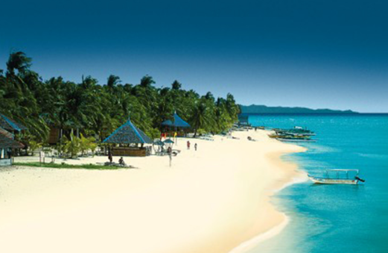
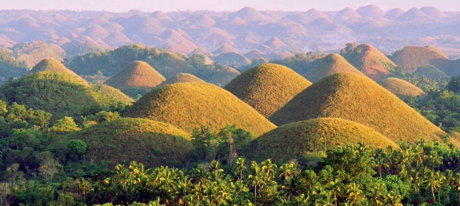
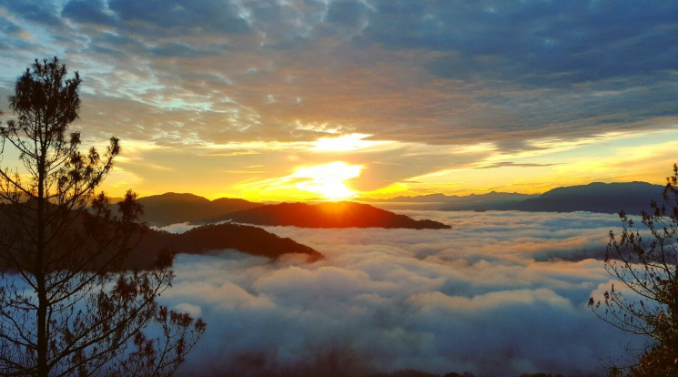
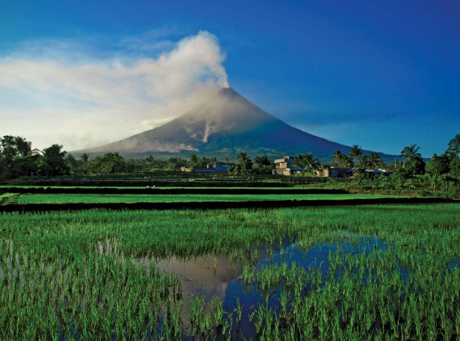

Bantayan Island, Cebu

Bantayan Island: Beautiful island in Cebu known for its white sandy beaches, crystal-clear waters, and tranquil atmosphere. Perfect for relaxation and island hopping.
Chocolate Hills, Bohol

Chocolate Hills: Unique geological formation in Bohol consisting of over 1,200 perfectly cone-shaped hills. Turns brown in dry season, giving the “chocolate” name.
Sagada, Mountain Province

Sagada: Mountain town famous for its hanging coffins, caves, waterfalls, and cool climate. A favorite for trekking, cultural immersion, and adventure tourism.
Mayon Volcano, Bicol

Mayon Volcano: Famous for its perfect cone shape, Mayon Volcano is an active stratovolcano in Bicol, offering trekking adventures and scenic views.